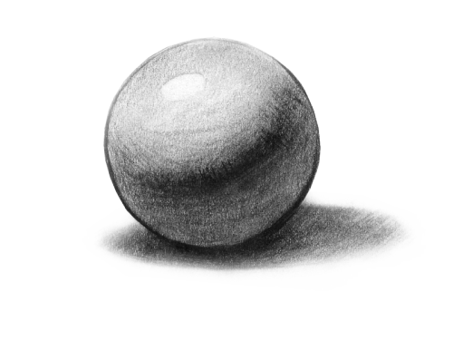

Home
Willkommen zu meinem Blog rund um das Zeichnen!
Erfahre wie du richtig Schattieren üben kannst, sieh dir fertige Zeichnungen an oder höre Musik um selber neue Kunstwerke zu kreieren!
Ich persönlich zeichne zurzeit hauptsächlich nur mit einem einzigen mechanischen Bleistift, heisst es wäre von Vorteil zu wissen wie man richtig schattiert. Doch wie funktioniert das genau?
Wie bei soziemlich allem beim Zeichnen ist man in diesem Gebiet niemals ein Meister. Dafür kann man aber üben, üben, üben und nochmals üben um täglich ein wenig besser zu werden.
Die soziemlich einfachste Variante um schnell und effizient die Kunst des Schattierens zu erlernen, ist wenn man täglich einen Kreis oder eine andere X-beliebige geometrische Form nimmt und dann einen Pfeil hinkritzelt, der markieren soll, aus welcher Richtung die Lichtquelle kommt. Danach gibt man einfach sein bestes und versucht die Form so gut wie möglich zu schattieren. Zum schluss, wenn man diese Aufgabe abgeschlossen hat, vergleicht man sein eigenes Ergebnis mit einigen aus dem Internet und schätzt ab wie gut man abgeschnitten hat. Dies macht man täglich und dann hat man es auch nach kürzester Zeit geschafft zu schattieren wie ein Profi!

Zeichnen ist eine Kunst. Wieso nicht Kunst mit weiterer Kunst kombinieren? Jedenfalls denkt sich dies mein Gehirn und braucht förmlich Musik um so richtig in Fahrt zu kommen.
Deswegen habe ich hier noch drei meiner Lieblingslieder hinzugefügt um vielleicht einen Inspirationsschub zu verleien :)
K/DA - POP / STARS
Mickey Valen - Meet Me
Stephen - Crossfire
Hier gibt es einige Beispiele, was meine Wenigkeit so schon alles kreiert hat: